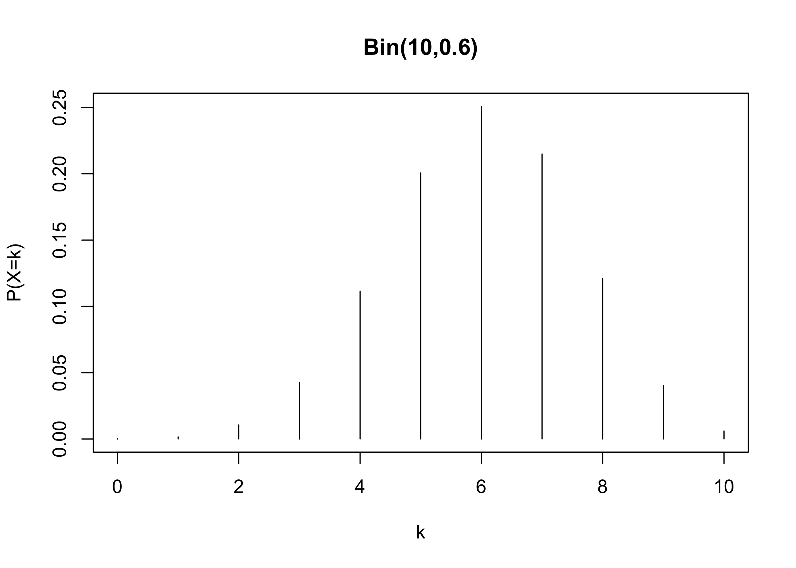
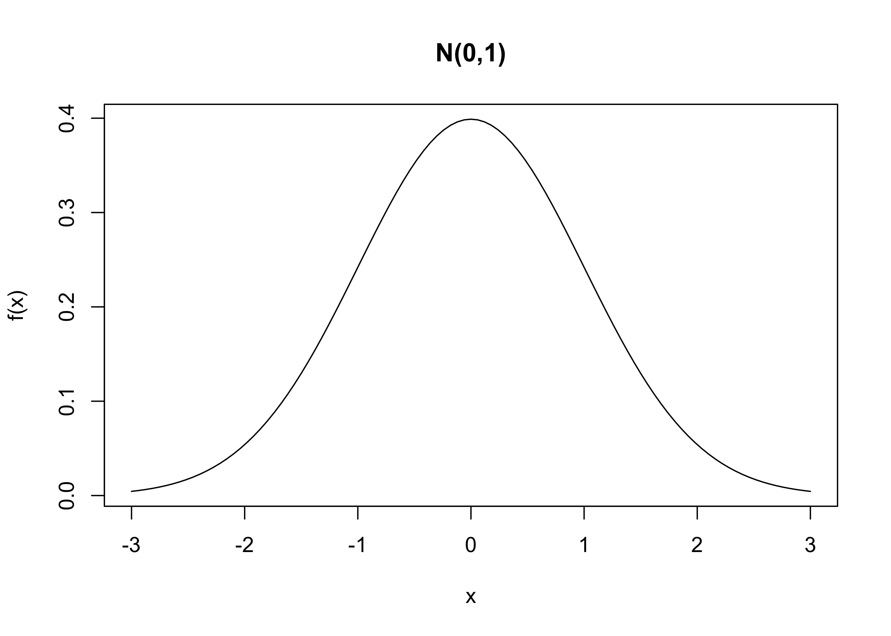
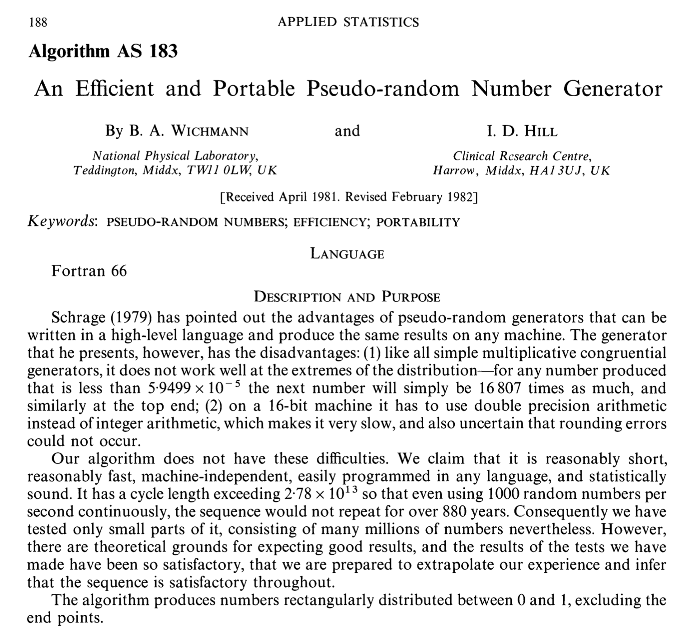

n <- 10 # Numero di tentativi
p <- 0.6 # Probabilità di successo
k <- 4 # Numero di successi
choose(n, k) * p^k * (1 - p)^(n - k)[1] 0.1114767Unità H: variabili aleatorie
La definizione formale di una variabile aleatoria coinvolge concetti di teoria della misura (\sigma-algebre, misure di probabilità, etc), che lasceremo sullo sfondo.
Ai fini di questo corso, ci è sufficiente ricordare che una variabile aleatoria X a valori reali è univocamente identificata dalla sua funzione di ripartizione, ovvero F(x) := \mathbb{P}(X \le x).
Se la funzione F(x) è costante a tratti, diremo che X è una variabile aleatoria discreta.
Se la funzione F(x) è continua, diremo che X è una variabile aleatoria continua.
Come anticipato, una variabile aleatoria si dice discreta se F(x) è costante a tratti.
Più precisamente, diremo che X è una variabile aleatoria discreta se esiste un insieme di cardinalità numerabile \mathcal{S} \subseteq \mathbb{R}, chiamato supporto, tale per cui \mathbb{P}(X \in \mathcal{S}) = \sum_{x \in \mathcal{S}} \mathbb{P}(X = x) = 1.
In pratica, spesso avremo che il supporto \mathcal{S} \subseteq \{0, 1, 2, \dots\} è un sotto-insieme dei numeri naturali. Inoltre, il supporto \mathcal{S} può essere finito.
Intuitivamente, diremo che la variabile aleatoria X può assumere solamente i valori del supporto \mathcal{S}.
La funzione di probabilità di una variabile aleatoria discreta è pari a p(x) = \mathbb{P}(X = x).
La funzione p(x) identifica una variabile aleatoria discreta.
Pertanto, ovviamente, vale che p(x) \ge 0 e che \sum_{x \in \mathcal{S}} p(x) = 1.
Il valore atteso di una variabile aleatoria è inoltre definito, se esiste, come \mathbb{E}(X) = \sum_{x \in \mathcal{S}} x \: p(x).
Più in generale, il valore atteso di una trasformazione g(X), se esiste, è pari a \mathbb{E}\{g(X)\} = \sum_{x \in \mathcal{S}} g(x) \: p(x).
Sia X \sim \text{Bin}(n, \pi) una variabile aleatoria binomiale, per cui la funzione di probabilità è \mathbb{P}(X = k) = {n \choose k } \pi^k (1-\pi)^{n-k}, \qquad k=0,1,\dots,n.
Supponendo che n = 10 e \pi = 0.6, allora \mathbb{P}(X=4) si calcola come segue:
n <- 10 # Numero di tentativi
p <- 0.6 # Probabilità di successo
k <- 4 # Numero di successi
choose(n, k) * p^k * (1 - p)^(n - k)[1] 0.1114767Tuttavia, in R esiste una funzione apposita per il calcolo della funzione di probabilità:
dbinom(k, size = n, prob = p)[1] 0.1114767In maniera simile, possiamo anche calcolare la probabilità seguente, ovvero
F(x) = \mathbb{P}(X \le x) = \sum_{k=0}^x\mathbb{P}(X = k), \qquad X \sim \text{Bin}(n, \pi).
Supponendo che n = 10 e \pi = 0.6, allora il valore F(5) si calcola come segue:
sum(dbinom(0:5, size = n, prob = p))[1] 0.3668967pbinom(5, size = n, prob = p) # Funzione specifica di R[1] 0.3668967Supponiamo di essere invece interessati all’evento complementare, ovvero: \mathbb{P}(X > 5) = 1 - \mathbb{P}(X \le 5).
1 - pbinom(5, size = n, prob = p)[1] 0.6331033pbinom(5, size = n, prob = p, lower.tail = FALSE)[1] 0.6331033Il valore atteso di una variabile aleatoria binomiale è pari a
\mathbb{E}(X) = \sum_{k=0}^n k \: \mathbb{P}(X = k) = np, \qquad X \sim \text{Bin}(n,p).
Supponendo come in precedenza che n = 10 e \pi = 0.6, si ha che:
n * p # Valore atteso ottenuto tramite calcoli analitici[1] 6sum(0:n * dbinom(0:n, size = n, prob = 0.6)) # Calcolo numerico[1] 6Tramite il calcolo diretto, possiamo inoltre valutare ad esempio \mathbb{E}(\sqrt{X}), infatti:
sum(sqrt(0:n) * dbinom(0:n, size = n, prob = 0.6))[1] 2.427083Il quantile-p una distribuzione discreta è il più piccolo valore k tale \mathbb{P}(X \le k) \ge p. Quindi: \mathcal{Q}(p) = \inf\{x \in \mathbb{R} : F(x) \ge p \}.
Supponendo che X \sim \text{Bin}(10, 0.6), ad esempio il primo quartile è
\mathcal{Q}(0.25) = \inf\{x \in \mathbb{R} : F(x) \ge 0.25 \} = 5.
In R possiamo ottenere questi risultati come segue:
qbinom(0.25, size = 10, prob = 0.6) # Primo quartile[1] 5Infatti, vale che:
pbinom(4, size = 10, prob = 0.6) # Il valore è minore di 0.25[1] 0.1662386pbinom(5, size = 10, prob = 0.6) # Il valore è maggiore di 0.25[1] 0.3668967kk <- 0:n
prob <- dbinom(0:n, size = n, prob = p)
plot(kk, prob, type = "h", main = "Bin(10,0.6)", xlab = "k", ylab = "P(X=k)")
Una variabile aleatoria si dice continua se F(x) è continua.
La funzione di densità di una variabile aleatoria continua è una funzione f(x) \ge 0 tale per cui \mathbb{P}(a < X < b) = \int_a^b f(x) \mathrm{d} x, \qquad f(x) = \frac{\partial}{\partial x} F(x).
Pertanto, per definizione: \mathbb{P}(X \le b) = F(b) = \int_{-\infty}^b f(x) \mathrm{d} x.
Inoltre, il valore atteso di una trasformazione g(X), se esiste, è pari a \mathbb{E}\{g(X)\} = \int_{\mathbb{R}} g(x) \: f(x) \mathrm{d} x.
Sia X \sim \text{N}(\mu, \sigma^2) una variabile gaussiana di media \mu e varianza \sigma^2, ovvero avente densità f(x) = \frac{1}{\sqrt{2 \pi \sigma^2}}\exp\left\{-\frac{1}{2\sigma^2}(x - \mu)^2\right\}.
Se X \sim \text{N}(3, 10) allora possiamo calcolare il valore f(1) utilizzando i comandi di R:
x <- 1 # Punto in cui calcolare f(x)
mu <- 3 # Media
sigma2 <- 10 # Varianza
1 / sqrt(2 * pi * sigma2) * exp(-1 / (2 * sigma2) * (x - mu)^2)[1] 0.1032883dnorm(x, mean = 3, sd = sqrt(sigma2))[1] 0.1032883Sia X \sim \text{N}(0,1) una normale standard. Siamo interessati a calcolare la probabilità dell’evento seguente: \mathbb{P}(|X| \le 1) = \mathbb{P}(-1 \le X \le 1) = \mathbb{P}(X \le 1) - \mathbb{P}(X < -1).
Possiamo calcolare questa probabilità (in modo inefficiente) tramite il comando integrate, pertanto:
integrate(dnorm, lower = -1, upper = 1)0.6826895 with absolute error < 7.6e-15Trattandosi di una variabile continua, otteniamo che \mathbb{P}(X < -1) = \mathbb{P}(X \le -1).
Quindi, possiamo calcolare questa probabilità in R utilizzando i comandi appositi:
pnorm(1) - pnorm(-1)[1] 0.6826895La continuità della funzione di ripartizione F(x) implica che la funzione quantile è pari a \mathcal{Q}(\cdot) = F^{-1}(\cdot).
Per esempio, si consideri il terzo quartile di una distribuzione normale standard, ovvero
qnorm(0.75)[1] 0.6744898Di conseguenza, la funzione quantile e di ripartizione sono tale per cui F(\mathcal{Q}(0.75)) = F(F^{-1}(0.75))= 0.75.
Infatti:
pnorm(qnorm(0.75))[1] 0.75curve(dnorm(x, mean = 0, sd = 1), from = -3, to = 3, ylab = "f(x)", main = "N(0,1)")
R dispone di un’estesa collezione di funzioni dedicate alle principali distribuzioni di probabilità. Sia X una variabile casuale.
ddist (dove la d iniziale sta per density). Calcola la densità f(x) di una variabile continua X oppure la funzione di probabilità p(x) = \mathbb{P}(X = x) nel caso X sia discreta.
pdist (dove la p iniziale sta per probability), che permette di calcolare il valore della funzione di ripartizione in un punto specificato, ovvero calcola F(x) = \mathbb{P}(X \le x).
qdist (dove la q iniziale sta per quantile), che rappresenta la funzione quantile, ovvero:
\mathcal{Q}(p) = \inf\{x \in \mathbb{R} : F(x) \ge p\}, \qquad p \in (0,1).
rdist (dove la r iniziale sta per random), che permette di generare numeri pseudo-casuali, che verranno illustrati nel seguito.
| Distribuzione | Comando | Parametri | Default |
|---|---|---|---|
| Binomiale | binom |
size, prob |
- |
| Geometrica | geom |
prob |
- |
| Poisson | pois |
lambda |
- |
| Uniforme | unif |
min, max |
0, 1 |
| Gamma | gamma |
shape, rate |
-, 1 |
| Esponenziale | exp |
rate |
1 |
| Chi-quadrato | chisq |
df |
- |
| Normale | norm |
mean, sd |
0, 1 |
La quarta classe di funzioni nella nostra lista è quella del tipo rdist, che permette quindi di ottenere dei valore casuali da una distribuzione.
Per esempio, per campionare 5 valori indipendenti e identicamente distribuiti (iid) da una normale standard, ovvero X_i \overset{\text{iid}}{\sim} \text{N}(0,1), \qquad i=1,\dots,5 possiamo usare in R il comando seguente:
R <- 5
rnorm(R, mean = 0, sd = 1)[1] -1.01204547 -0.07619848 -0.50108027 -1.81959678 -1.46919726I valori generati dal comando rdist imitano i risultati di un processo casuale, ma sono in realtà deterministici. Tali valori sono quindi chiamati pseudo-casuali.
Esistono in realtà dei metodi per generare numeri davvero casuali, basate ad esempio su rilevazioni atmosferiche.
Al sito https://www.random.org/gaussian-distributions/ è possibile ottenere un numero limitato di valori casuali da una distribuzione gaussiana.
Lo svantaggio di quest’ultima classe di metodi è che sono relativamente costosi da ottenere \implies ne vale la pena?
A meno che non sussistano specifici problemi di sicurezza, i numeri pseudo-casuali costituiscono lo standard usato dalla quasi totalità degli utenti.
Supponiamo di saper simulare dei valori U_1,\dots,U_n da una distribuzione uniforme in (0,1), ovvero quanto si ottiene ad esempio tramite il comando runif.
Possiamo “facilmente” ottenere i valori casuali di una qualsiasi distribuzione considerando un’opportuna trasformazione dei valori U_1,\dots,U_n.
La parte difficile è quindi simulare valori pseudo-casuali U_1,\dots,U_n in maniera tale che questi assomiglino il più possibile a realizzazioni iid da una distribuzione uniforme.
Trattandosi di numeri pseudo-casuali, siamo quindi alla ricerca di un vero e proprio algoritmo che a partire da delle condizioni iniziali, produca U_1,\dots,U_n.
La condizione iniziale viene tipicamente chiamata seme (seed).
Presentiamo un metodo molto semplice per generare numeri pseudo-casuali (Wichmann & Hill, 1982), che tuttavia è stato molto popolare negli anni ’80 e ’90.

Vogliamo ottenere delle realizzazioni u_1,\dots, u_n da una distribuzione uniforme (0,1).
Inizializzazione. Si parte da tre numeri interi qualsiasi x_0, y_0, z_0, che costituiscono la condizione iniziale, il cosiddetto seed.
Aggiornamento iterativo del seme. A ciascuna iterazione, si aggiornano i 3 numeri x_i, y_i, z_i a partire da quelli ottenuti alla iterazione precedente:
\begin{aligned}
x_i = (171 \times x_{i-1})(\text{mod}\:30269) \\
y_i = (172 \times y_{i-1})(\text{mod}\:30307) \\
z_i = (170 \times z_{i-1})(\text{mod}\:30323) \\
\end{aligned}
per ogni i=1,\dots,n. La funzione \text{mod} (equivalente a %% in R) calcola il resto, per cui ad esempio 205 (\text{mod}\:10) = 5.
Output. Si ottiene una sequenza di realizzazioni come segue: u_i = \left(\frac{x_i}{30269} + \frac{y_i}{30307} + \frac{z_i}{30323} \right)(\text{mod}\: 1), \qquad i=1,\dots,n.
L’algoritmo pertanto aggiorna iterativamente la condizione iniziale (seed). I valori finali x_n, y_n, z_n possono essere usati come seed per estrazioni successive.
Non c’è nulla di “casuale” in questa sequenza di numeri. Per definizione, se i tre numeri di partenza x_0, y_0, z_0 sono gli stessi, l’output sarà sempre uguale.
Questo algoritmo ha periodo circa pari a m = 6.95 \times 10^{12}. Pertanto u_{i + m} = u_i.
Pertanto, se eseguissimo questo metodo per un tempo sufficientemente lungo, la sequenza di numeri ottenuti è destinata a ripetersi!
Una sequenza che si ripete è un problema? In teoria si, in pratica m negli algoritmi moderni (m \approx 2^{19937}) è talmente grande che questo fattore è trascurabile.
runif.wh <- function(n) {
a <- c(171, 172, 170)
b <- c(30269, 30307, 30323)
s <- .current.seed # Il seed corrent è presente nel "global environment"
u <- rep(0, n) # Inizializzazione dell'output
for (i in 1:n) {
s <- (a * s) %% b
u[i] <- sum(s / b) %% 1
}
.current.seed <<- s # Salva il seed finale nel "global environment"
u
}
.current.seed <- c(123, 456, 789)
runif.wh(5)[1] 0.7061613 0.9181272 0.1477225 0.6591895 0.3623401.current.seed[1] 24178 7775 9310Supponiamo di voler estrarre dei valori iid X_1,\dots,X_n da una legge discreta.
Per semplicità, assumiamo che il supporto \mathcal{S} = \{x_1, \dots, x_K\} sia finito e che (\pi_1,\dots,\pi_K) siano le probabilità associate, per cui \mathbb{P}(X_i = x_k) = \pi_k, \qquad k=1,\dots,K.
A partire dalle variabili uniformi U_1,\dots,U_n in (0,1) è semplice ottenere X_1,\dots,X_n.
Dividiamo l’intervallo (0,1) in K sotto-intervalli, ciascuno di lunghezza \pi_k. Il valore X_i corrisponde al valore associato all’intervallo a cui U_i appartiene.
Infatti, sia a_0 = 0 e (a_{k-1}, a_k) il k-esimo intervallo tale che a_k - a_{k-1} = \pi_k. Allora \mathbb{P}(a_{k-1} < U_i < a_k) = \pi_k \implies \mathbb{P}(X_i = x_k) = \pi_k, per k=1,\dots,K.
Possiamo sfruttare la nostra funzione runif.wh per ottenere valori pseudo-casuali da una distribuzione binomiale.
rbinom.wh <- function(n, size, prob) {
u <- runif.wh(n)
probs <- dbinom(0:size, size = size, prob = prob)
breaks <- cumsum(c(0, probs))
as.numeric(cut(u, breaks)) - 1 # Converte la variabile "factor" in numeri interi
}
.current.seed <- c(100, 200, 300)
rbinom.wh(20, size = 5, prob = 0.5) [1] 2 3 2 2 1 2 4 2 1 4 3 3 0 3 2 4 4 2 4 4Un dado a sei facce rappresenta una variabile casuale discreta X con funzione di probabilità chiamata Uniforme Discreta, ovvero
\mathbb{P}(X = k) = \frac{1}{6}, \qquad k=1,\dots,6.
Per simulare lancio di un dado a sei facce, costruiamo anzitutto un vettore contenente una sequenza di numeri da 1 a 6 corrispondenti ai possibili esiti del lancio.
dice <- 1:6Possiamo usare il comando sample per effettuare il lancio:
set.seed(123) # Comando di R per identificare il "seed"
sample(x = dice, size = 1) # size = 1 implica che viene lanciato un solo dado[1] 3samplePiù in generale, la funzione sample(x, size, replace, prob) estrae casualmente un numero size di elementi da un’urna contenente gli oggetti x
replace = TRUE;replace = FALSE.Se l’argomento prob non viene specificato, la funzione sample assegna ad ogni elemento di x uguale probabilità.
Se volessimo campionare con probabilità non uniformi, dovremmo indicare un vettore di probabilità di lunghezza pari agli elementi di x (provate per esercizio!)
Il campionamento con reinserimento equivale a fare n estrazioni indipendenti dalla stessa variabile aleatoria X. Pertanto, per lanciare lo stesso dado 10 volte:
set.seed(140)
n <- 10
# replace = TRUE implica che il dado è lanciato 10 volte
sim <- sample(dice, size = n, replace = TRUE)
sim [1] 3 1 1 1 3 6 4 5 1 6Per effettuare una ipotetica estrazione del Lotto, si devono estrarre da un’urna 5 numeri, tra l’1 e il 90, senza reinserimento.
In R quindi:
sample(1:90, size = 5, replace = FALSE)[1] 64 53 87 83 61Se specifichiamo solamente il seguente comando:
sample(dice)[1] 5 3 1 2 6 4otteniamo una permutazione casuale degli elementi di x.
Infatti, i valore predefiniti sono replace = FALSE e size = length(x), ovvero un campionamento senza reinserimento di tutti gli elementi dell’urna.
Sia X una variabile aleatoria con funzione di ripartizione F(x) e funzione quantile \mathcal{Q}(p) = \inf\{x \in \mathbb{R} : F(x) \ge p \}.
Inoltre, sia U \sim U(0,1). Allora, vale che
X \overset{d}{=} \mathcal{Q}(U).
\mathbb{P}(Q(U) \le x) = \mathbb{P}(U \le F(x)) = F(x).
Supponiamo di voler generare dei valori X_1,\dots, X_n da una distribuzione gaussiana.
Possiamo usare il metodo dell’inversione, usando la funzione qnorm.
rnorm.wh <- function(n, mean, sd) {
u <- runif.wh(n)
qnorm(u, mean = mean, sd = sd)
}
.current.seed <- c(100, 200, 300)
rnorm.wh(n = 10, mean = 0, sd = 1) # 10 valori da una normale standard [1] -0.30055385 0.68773053 -0.60218766 -0.09437046 -1.79635403 -0.56676389
[7] 1.37283913 -0.41755131 -1.26972731 1.73470371Supponiamo di voler generare dei valori X_1,\dots, X_n da una distribuzione binomiale.
Possiamo usare anche in questo caso il metodo dell’inversione, usando la funzione qnorm.
rbinom.wh2 <- function(n, size, prob) {
u <- runif.wh(n)
qbinom(u, size = size, prob = prob)
}
.current.seed <- c(100, 200, 300)
rbinom.wh(n = 10, size = 5, prob = 0.5) [1] 2 3 2 2 1 2 4 2 1 4.current.seed <- c(100, 200, 300)
rbinom.wh2(n = 10, size = 5, prob = 0.5) [1] 2 3 2 2 1 2 4 2 1 4La distribuzione continua chiamata half-normal ha la seguente densità: f(y) = \frac{\sqrt{2}}{\sqrt{\pi}} \exp\left\{ - \frac{y^2}{2}\right\}, \qquad y > 0.
Inoltre, è noto che se X \sim N(0,1) allora Y = |X| segue una distribuzione half-normal.
Si scriva in R la funzione dhalf(y) che calcola la densità f(y).
Si sviluppi una strategia per campionare dei valori pseudo-casuali da una half normal e la si implementi in R.
Implementiamo in primo luogo la funzione dhalf, come richiesto:
dhalf <- function(y) {
sqrt(2 / pi) * exp(-y^2 / 2)
}
# Non richiesto, controllo che integri a 1
integrate(function(x) dhalf(x), 0, Inf)1 with absolute error < 9.4e-05Per generare valori casuali da una half-normal è sufficiente generare valori pseudo-casuali da una normale standard e quindi considerarne il valore assoluto.
In generale, se vale Y = g(X) allora è sufficiente campionare i valori di X e poi trasformarli.
La distribuzione continua Weibull ha la seguente densità: f(x) = \alpha \beta x^{\beta - 1} \exp\left\{- \alpha x^\beta \right\}, \qquad x > 0.
Si scriva in R la funzione dweibull che calcola la densità f(x).
Dopo averla ottenuta analiticamente, si implementi in R la funzione pweibull per la funzione di ripartizione F(x).
Dopo averla ottenuta analiticamente, si implementi in R la funzione qweibull per la funzione quantile \mathcal{Q}(p).
Si sviluppi una strategia per campionare dei valori pseudo-casuali da una Weibull basata sul metodo dell’inversione e si implementi in R la funzione rweibull.
Implementiamo in primo luogo la funzione dweibull(x, alpha, beta):
dweibull <- function(x, alpha, beta) {
alpha * beta * x^(beta - 1) * exp(-alpha * x^beta)
}Ricordiamo che la funzione di ripartizione è pari a F(x) = \int_0^xf(s) \mathrm{d}s = \alpha \beta \int_0^x s^{\beta - 1} \exp\left\{- \alpha s^\beta \right\}\mathrm{d}s =1 - e^{-\alpha x^\beta}, \qquad x > 0.
Quindi, invertendo F(x), si ottiene che la funzione quantile è pari a \mathcal{Q}(p) = F^{-1}(p) = \left(-\frac{\log{(1-p)}}{\alpha}\right)^{1/\beta}, per p \in (0,1).
pweibull <- function(x, alpha, beta) {
1 - exp(-alpha * x^beta)
}
qweibull <- function(p, alpha, beta) {
(-log(1 - p) / alpha)^(1 / beta)
}
rweibull <- function(R, alpha, beta) {
qweibull(runif(R), alpha, beta)
}
rweibull(10, 2, 2) [1] 1.1276566 0.8814093 0.4688023 0.7052449 0.6102069 0.8906791 0.4756895
[8] 0.5512620 1.1274530 1.4573989